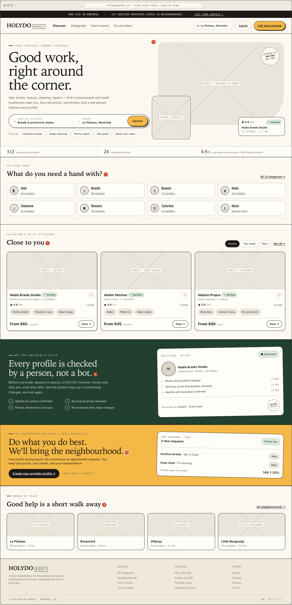
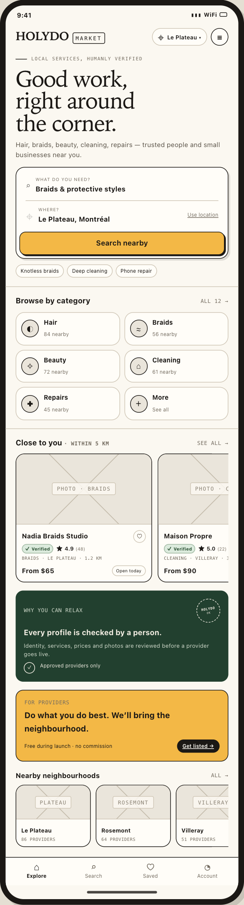
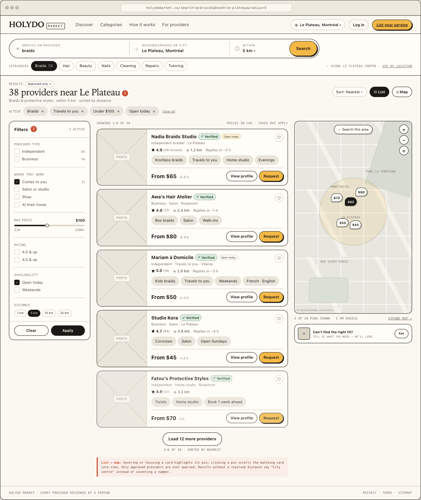
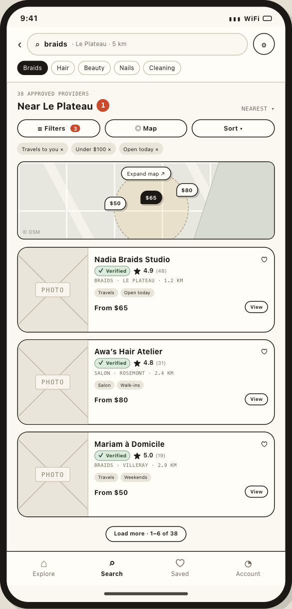
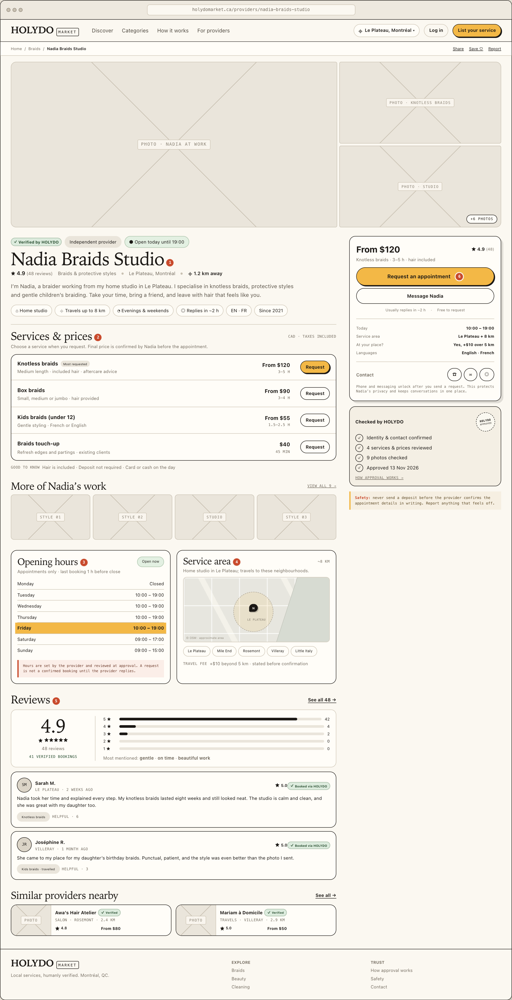
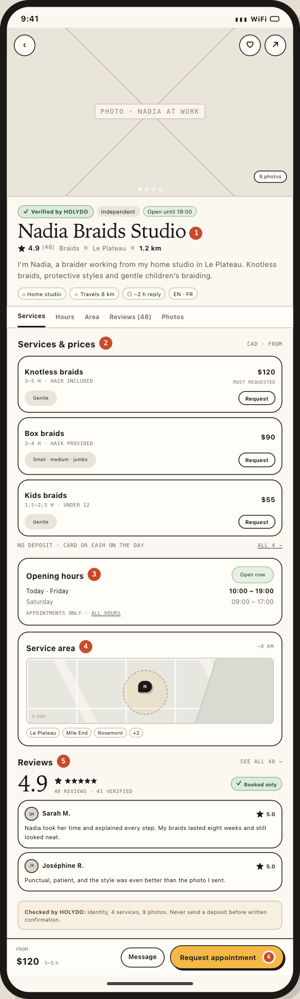
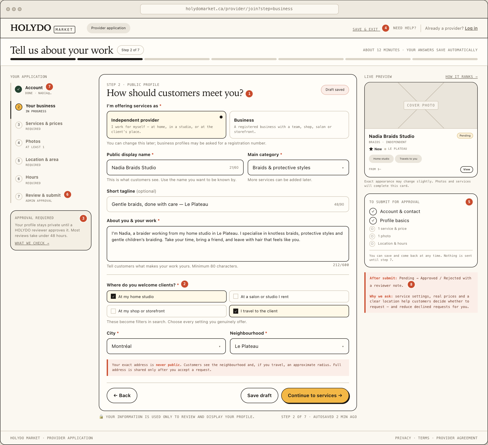
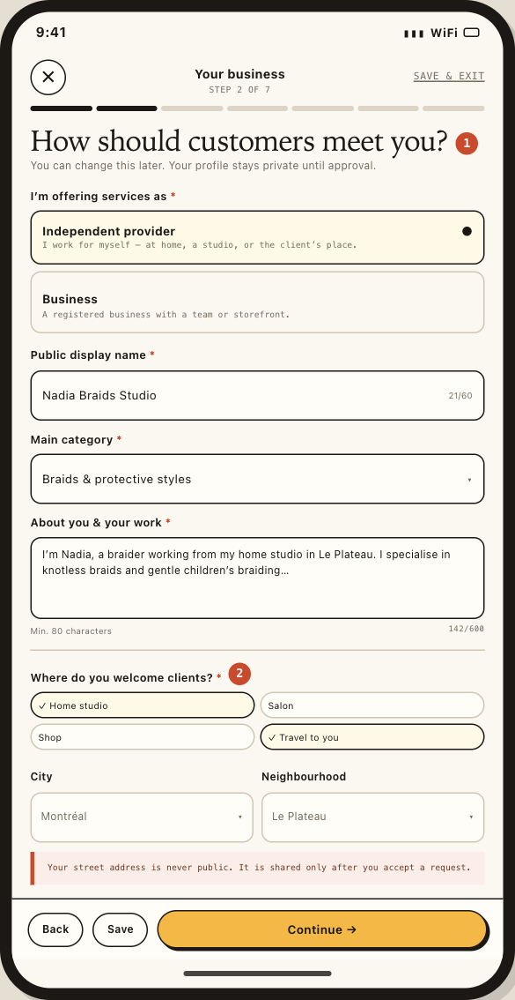

01 · Homepage
/
DESKTOP

MOBILE

One search, eight categories, nearby proof, approval story.
Open wireframePNG
Local services, humanly verified. A first-version concept for a mobile-first marketplace that connects neighbourhood customers with independent providers and small businesses.
Each page is drawn at 1180 px desktop and 390 px mobile, with numbered annotations. Click through to the full wireframe or open the high-resolution PNGs.








Warm paper, a confident editorial serif, real photography, ink borders and stamp-like verification. Friendly and local; precise enough to trust with an appointment.
Final values, not placeholders. The wireframes use a deliberately reduced palette; the build will apply these tokens throughout.
#17130F#F6F0E4#FFFDF8#F2B33D#C9502E#173D2EFraunces for display and headlines — expressive, editorial, not corporate. Inter for UI and body — quiet, legible, excellent at small sizes.
18–28 px radii, 1 px ink borders, sticker-offset shadows on feature cards. 150–250 ms ease-out; no ambient animation, no glassmorphism. Mobile uses a bottom tab bar, sticky actions and sheets.
No layout, copy, logo, image, or code is copied from any reference.
The complete step-by-step journeys, including edge states, are in the v1 plan. These are the paths the build will be tested against.
Nothing in the product has been coded yet. Once approved, I will build M1–M5 and test both journeys end-to-end.
Each milestone ends with lint, typecheck, and a runnable build. Major changes are explained in the README and in my update.